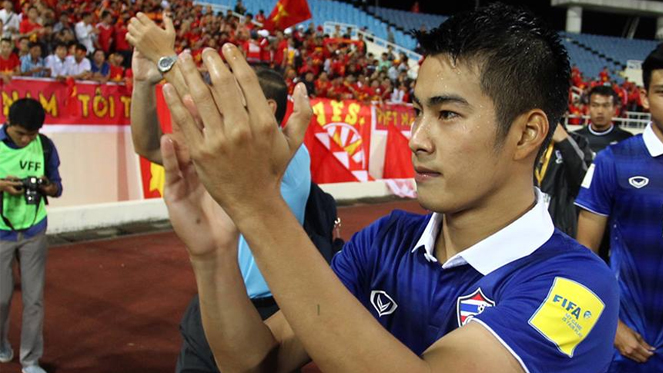

สงสัยจะจริง?! สารัช แย้มลีกมาเลเซียก็น่าสนใจ

"เจ้าตังค์" สารัช อยู่เย็น มิดฟิลด์ตัวเก่งของเอสซีจี เมืองทอง ยูไนเต็ด และทีมชาติไทย
ออกมายอมรับตามตรงว่าในตอนนี้มีข้อเสนอจากทางมาเลเซียเข้ามาหาตนจริง ๆ และตนเองก็ค่อนข้างสนใจ แต่ก็ยังไม่มีอะไรคืบหน้า
เพราะว่ายังมีสัญญากับทาง กิเลนผยอง อีกหนึ่งปี จากรายงานของ โกล ประเทศไทย เมื่อ 24 พฤศจิกายนที่ผ่านมา
ก่อนหน้านี้มีรายงานของ espn ว่าทางผู้ใหญ่ของมาเลเซียสนใจที่จะดึง สารัช กับ เมสซี่เจ ไปลงเล่นในซุปเปอร์ลีก มาเลเซีย ในฤดูกาลหน้า ซึ่งล่าสุดทาง ห้องเครื่องวัย 23 ปี ก็ออกมายอมรับว่ามีข้อเสนอเข้ามาหาตนจริง ๆ แต่ว่ายังไม่ได้มีการเจรจาอะไรกันอย่างเป็นทางการทั้งนั้น
สารัช อยู่เย็น เผยว่า ในตอนนี้มีข้อเสนอจากทางมาเลเซียเข้ามาจริง ๆ ครับ แต่ว่าผมเองก็ยังไม่ได้ตัดสินใจอะไรลงไป เพราะว่าผมเองยังมีสัญญาอยู่กับเมืองทองอีกหนึ่งปี"
ซึ่งผมยอมรับนะว่ามันก็ค่อนข้างน่าสนใจทีเดียวครับหากว่าผมจะได้รับประสบการณ์ใหม่ ๆ และถึงแม้ว่าเขาอาจจะยังไม่ได้พัฒนาทางด้านฟุตบอลเท่าเรา แต่เขาก็กำลังอยู่ในช่วงพัฒนาที่ดีนะครับ"